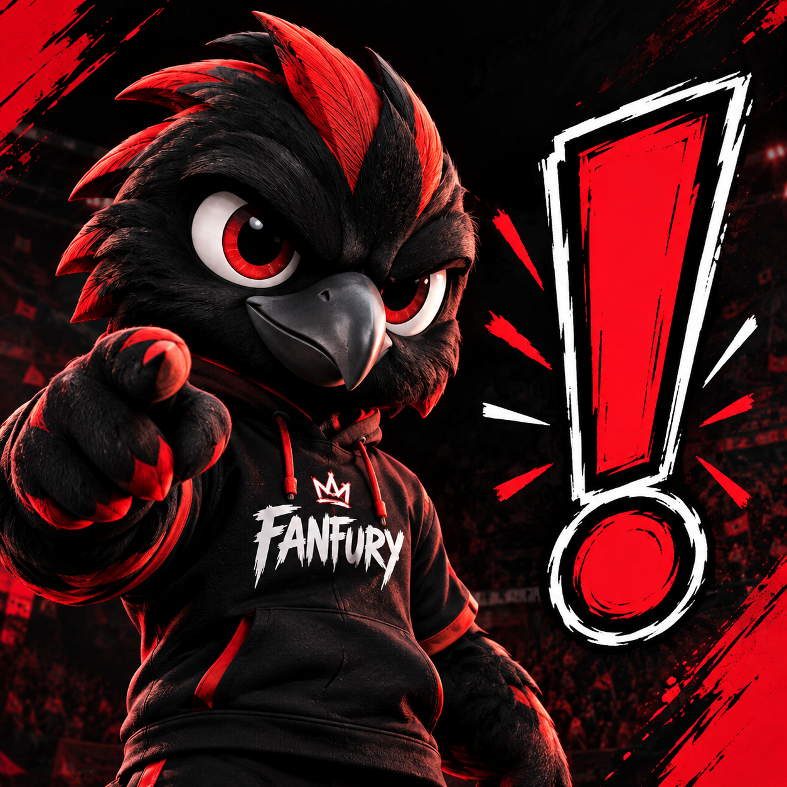

.png)
Guía de Sustentación
Defensa oficial y puntos clave del proyecto de investigación del Colegio Alfonso López Michelsen IED.

⚽ 1. Presentación del proyecto
Fan Fury es un proyecto de investigación de grado 11 del Colegio Alfonso López Michelsen IED, que busca contribuir a la disminución de la violencia entre las barras bravas, especialmente en jóvenes de 15 a 25 años, promoviendo el respeto y la convivencia sin perder la pasión por el fútbol.
⚠️ 2. Planteamiento del problema
La violencia entre las barras bravas puede surgir por provocaciones, insultos, rivalidades deportivas y la influencia de otros integrantes. Estas situaciones afectan gravemente la convivencia y generan conflictos profundos entre los jóvenes.
❓ 3. Pregunta de investigación
¿Cómo disminuir la violencia de las barras bravas entre jóvenes de 15 a 25 años?
🎯 4. Objetivo del proyecto
Proponer una herramienta digital que informe, genere conciencia sobre las consecuencias de la violencia y promueva el respeto, el diálogo y la convivencia pacífica entre los hinchas.
📊 5. Resultados de la encuesta
Se encuestaron 34 estudiantes de grado 11. Entre los resultados principales se encuentran:
- El 33,3 % señaló las provocaciones o los insultos como una de las principales causas de las riñas.
- El 30,3 % identificó la rivalidad entre equipos.
- El 30,3 % señaló la influencia de otros integrantes.
- El 64,7 % indicó que el ingreso a las barras bravas ocurre principalmente durante el bachillerato.
- El 85,3 % reconoció la influencia de entre 1 y 6 amigos o familiares en el ingreso a una barra.
Estos resultados permiten comprender la importancia de trabajar en la prevención, la educación y la influencia positiva del entorno social.
📱 6. Producto de mitigación: aplicación Fan Fury
Fan Fury es una aplicación diseñada en MIT App Inventor como propuesta para ayudar a prevenir la violencia entre las barras bravas. Su propósito es informar a los jóvenes, mostrar las consecuencias de los conflictos y fomentar actitudes de respeto entre hinchas de diferentes equipos.
🖥️ 7. Diseño y funcionalidad del prototipo
La aplicación contará con seis pantallas principales:
- Inicio: Pantalla de bienvenida y acceso general.
- Información sobre las causas de la violencia: Contexto de los conflictos.
- Consecuencias de la violencia: Análisis del impacto negativo.
- Retos de respeto y convivencia: Actividades interactivas.
- Barrismo social: Enfoque positivo del apoyo futbolero.
- Consejos y compromiso personal: Reflexión final del hincha.
Cada pantalla busca ofrecer información y actividades sencillas que ayuden a reflexionar sobre el comportamiento de los hinchas.
🛡️ 8. ¿Cómo responde Fan Fury al problema?
La propuesta busca prevenir los conflictos mediante la información, la concientización y la promoción del respeto. No pretende eliminar la pasión por el fútbol, sino demostrar que se puede apoyar a un equipo sin agredir ni discriminar a los demás.
✨ 9. Conclusión
Con Fan Fury queremos demostrar que el fútbol puede unir a las personas en lugar de enfrentarlas. A través de nuestra investigación, los resultados de la encuesta y el diseño de la aplicación, proponemos una alternativa educativa que fomente el respeto, el diálogo y la convivencia pacífica entre los jóvenes.